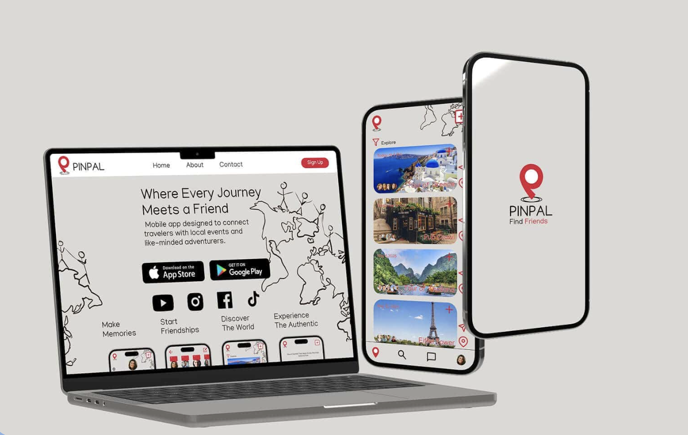
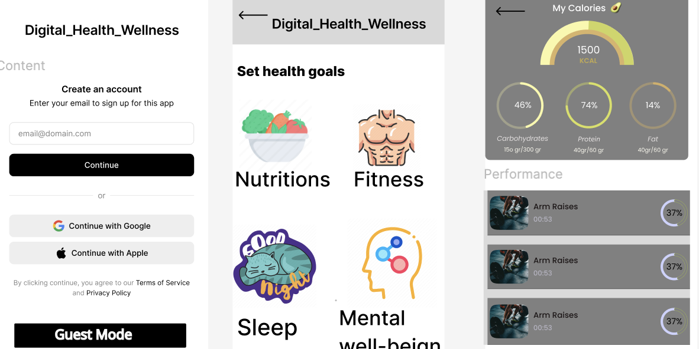
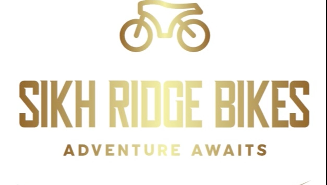
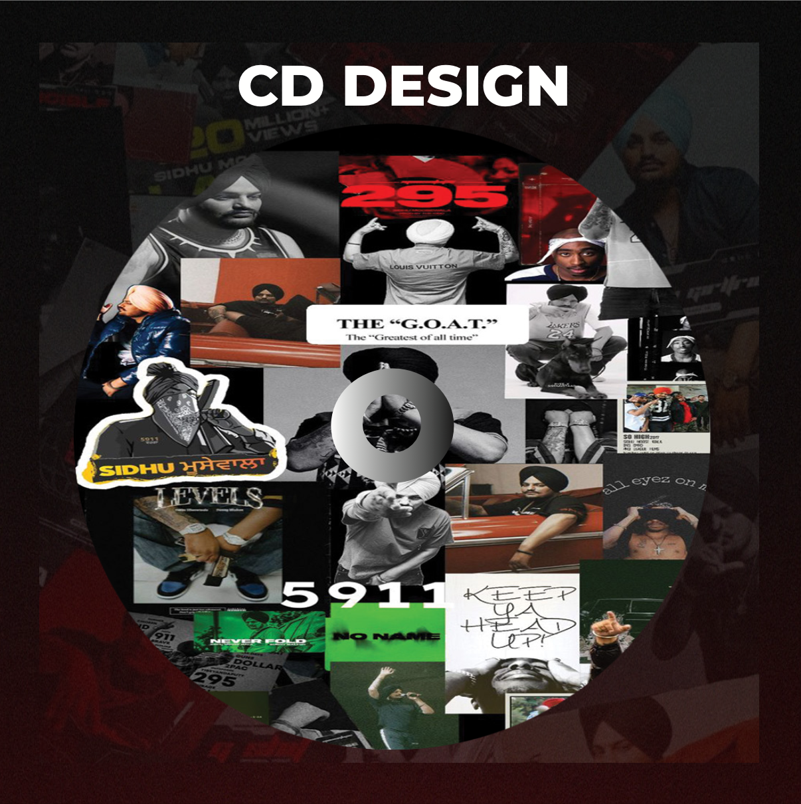
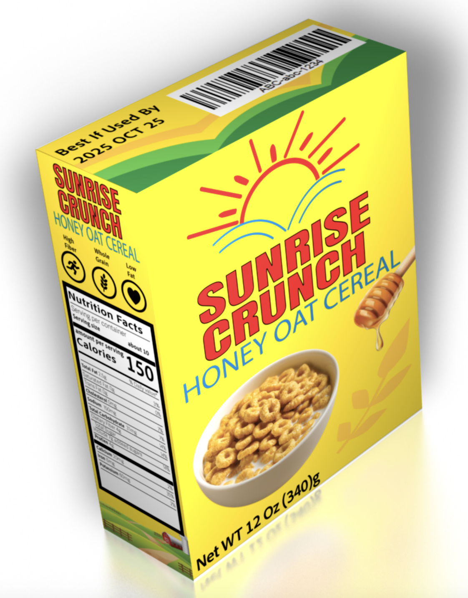
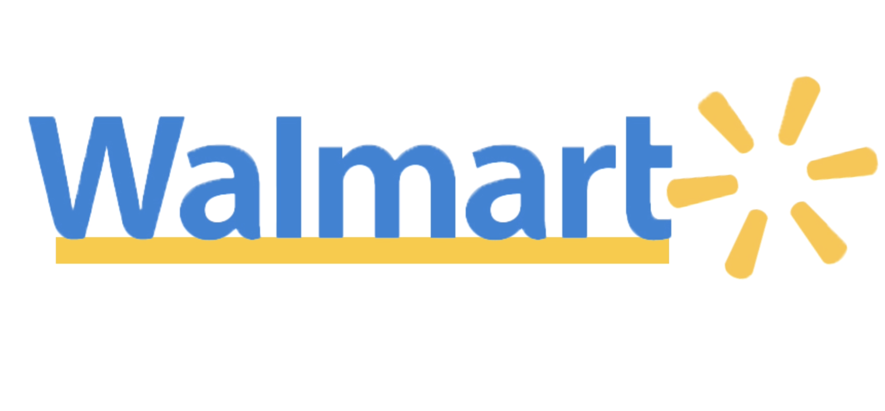

Work
Selected projects that showcase my UI/UX thinking, design process, and iterative approach.
UI/UX
StudyBuddy is a simple, responsive web application designed to help students
manage their study schedules, tasks, and goals in one organized space.
The project focuses on improving time management and productivity
through a clean, user-friendly interface.
UI/UX
Pinpal is an experience-driven travel app that helps adventurers discover authentic
local events, make meaningful connections, and create unforgettable memories.
 UI/UX
The Digital Health & Wellness Platform is a mobile-focused wellness solution
designed to help users track fitness, nutrition, sleep, and mental well-being
in one centralized app.
 Videography
A dynamic videography project showcasing marketing through compelling
visual storytelling. The project focuses on energy, movement, and brand presence
using cinematic framing, pacing, and sound design to create an engaging promotional experience.
 Design
This project explores the dual reality many students live in—balancing work
in t he present while investing in education for t he future. By visually splitting
t he subject into two environments, t he image represents t he contrast
between financial responsibility and personal ambition.
Design
This project is a commemorative CD booklet created as a tribute to Sidhu Moosewala,
honoring his life, music, and cultural impact. It highlights his roots in Moosa,
the power of his lyrics, and the cultural significance of his song “295.”
 Design
Sunrise Crunch is a packaging design project focused on creating a bold visual identity
and a clean product layout. This work highlights branding, typography hierarchy, and
3D product mockup presentation.
 Design
Swiss Poster is a typographic design project inspired by the International
Typographic Style. The layout is built on a strict grid system, focusing on
alignment, hierarchy, and clarity. The design emphasizes bold typography,
structured spacing, and minimal visual elements to create balance and precision.
Design
For this project, I created a motion graphic animation of the Walmart logo using After Effects. The purpose of this project was not branding or redesign, but to practice and improve my motion graphics skills, especially working with logo animation, timing, and smooth transitions.
STUDYBUDDY

PINPAL
DIGITAL HEALTH & WELLNESS
View Project
Sikh Ridge Bikes
Visual Design & Photography
View Project

CD BOOKLET
SUNRISE CRUNCH
SWISS POSTER
.png)
Personal Project